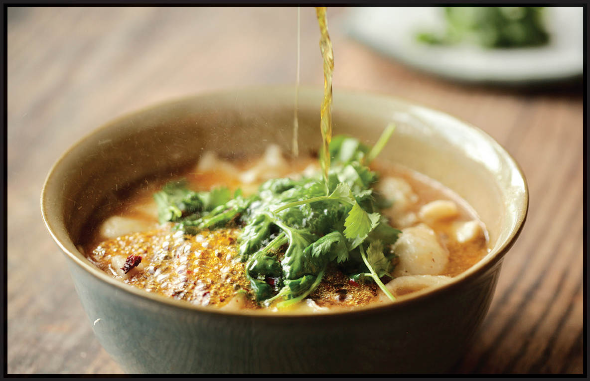

SICHUAN-STYLE FISH POACHED IN CHILE BROTH (SHUI ZHU YU)
|
Yield Serves 4 |
Active Time 25 minutes Total Time 25 minutes |
For this dish I like to use green Sichuan peppercorns, which have a stronger numbing effect and brighter, more citrusy aroma. If you can’t find them, red ones will work just fine.
This is one of my dad’s favorite dishes. He knows it as “Fei Teng Fish,” named after a famous chain of Sichuan restaurants in Beijing. In Sichuan, they call it shui zhu yu, or “water-boiled fish.” It’s very similar to water-boiled beef, but because of fish’s more delicate texture and flavor, the broth is a little bit lighter, flavored with scallions and ginger and just a hint of fermented chile bean paste. It also makes the dish even easier to prepare.
INGREDIENTS
For the Fish:
1 pound fish fillet, such as tilapia, flounder, or sea bass, thinly sliced on a bias
1 teaspoon kosher salt
½ teaspoon (1 g) freshly ground white pepper
1 tablespoon (15 ml) Shaoxing wine
1 large egg white
2 tablespoons cornstarch
2 teaspoons (10 ml) peanut, rice bran, or other neutral oil
For the Málà Mixture:
3 tablespoons (45 ml) peanut, rice bran, or other neutral oil
12 to 20 small dried red chiles, such as Sichuan er jing tiao (see Note), stems snipped off and discarded, seeds mostly shaken out and discarded
2 tablespoons (10 g) green Sichuan peppercorns (see Note)
To Cook:
2 teaspoons (10 g) Sichuan broad bean chile paste (doubanjiang)
2 cups (480 ml) homemade or store-bought low-sodium chicken stock or water
2 tablespoons (30 ml) Shaoxing wine
2 scallions, white and pale green parts cut on a sharp bias into 1-inch segments, greens chopped for garnish
8 ounces (225 g) bean sprouts, trimmed
3 slices fresh ginger
Kosher salt
To Serve:
Handful of chopped fresh cilantro leaves and fine stems
¼ cup (60 ml) caiziyou (roasted rapeseed oil; see here) or peanut, rice bran, or other neutral oil
DIRECTIONS
1 For the Fish: Place the fish slices in a medium bowl. Add the salt, white pepper, wine, egg white, cornstarch, and oil. Stir with your fingers until the fish is thoroughly coated in the mixture. Set aside.
2 For the Málà Mixture: Combine the oil and chiles in a wok. Cook over medium heat, stirring and flipping the chiles constantly until they start to darken in color, about 1 minute. Add the Sichuan peppercorns and continue cooking until very fragrant but not burnt, 30 to 60 seconds longer. Transfer the chiles and peppercorns to a cutting board, leaving the oil in the wok. Chop the chiles and Sichuan peppercorns until they are about the same size as standard red pepper flakes (the kind you put on your pizza). Set aside.
3 To Cook: Return the wok to high heat until smoking. Add the chile bean paste and stir-fry until fragrant, about 15 seconds. Add the stock, wine, white and pale green parts of the scallions, bean sprouts, and ginger, and bring to a simmer. Cook just until the bean sprouts are tender-crisp, about 1 minute, then transfer the solids from the wok to a serving bowl using a spider. Return the broth to a simmer.
4 Gently lower the fish into the wok one piece at a time so that it doesn’t stick. Increase the heat to high and cook, swirling constantly, until the fish is just barely cooked through and the liquid is simmering, about 1 minute. Pour the fish and the broth over the bean sprout mixture in the bowl. Wipe out the wok.
5 To Serve: Sprinkle the chopped chile and Sichuan peppercorn mixture all over the top of the beef. Sprinkle the cilantro leaves over the top. Heat the oil in the wok until it is smoking hot, then pour it all over the top of the serving bowl, causing the chiles, Sichuan peppercorn, and cilantro to sizzle and release their aroma. Serve immediately.
